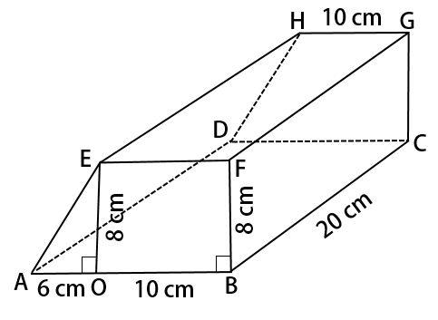

KUNCI JAWABAN PILIHAN GANDA
1. Ada empat diagonal ruang pada kubus, yaitu ruas garis AG, HB, CE, dan DF
(Jawaban B)
Luas permukaan gabungan bangun ruang tabung dan setengah bola pada gambar yang diberikan dapat dihitung dengan menjumlahkan luas alas tabung, luas selimut tabung, dan luas belahan bola.
Luas alas tabung (luas lingkaran) dengan diameter 14 cm atau berjari-jari 7 cm adalah
L1=πr2=227×7×7=154 cm2
Luas selimut tabung dengan jari-jari 7 cm dan tinggi 10 cm adalah
L2=2πrt=2×227×7×10=440 cm2
Luas belahan bola berjari-jari 7 cm (sama dengan jari-jari tabung) adalah
L3=2πr2=2(154)=308 cm2
Jadi, luas permukaan totalnya adalah
L=L1+L2+L3=154+440+308=902 cm2
(Jawaban A)
(Jawaban B)
L1=πr2=227×7×7=154 cm2
Luas selimut tabung dengan jari-jari 7 cm dan tinggi 10 cm adalah
L2=2πrt=2×227×7×10=440 cm2
Luas belahan bola berjari-jari 7 cm (sama dengan jari-jari tabung) adalah
L3=2πr2=2(154)=308 cm2
Jadi, luas permukaan totalnya adalah
L=L1+L2+L3=154+440+308=902 cm2
(Jawaban A)
2. (Kubus) Karena kubus memiliki 12 rusuk yang sama panjang, maka kelilingnya adalah
k1=12×s=12×12=144 cm
(Balok) Karena balok memiliki 4 rusuk panjang, 4 rusuk lebar, dan 4 rusuk tinggi, maka kelilingnya adalah
k2=4×(p+l+t)=4×(10+13+9)=4×32=128 cm
(Prisma segi empat beraturan) Bangun ruang ini memiliki sisi alas dan atas berupa segitiga sama sisi (ada 6 rusuk yang sama panjang) dan 3 rusuk tinggi yang sama panjang, sehingga kelilingnya
k3=6×12+3×15=72+45=117 cm
(Limas segi empat beraturan) Bangun ruang ini memiliki 4 rusuk alas yang sama panjang dan 4 rusuk tegak yang juga sama panjang, sehingga kelilingnya
k4=4×13+4×21=52+84=136 cm
Dengan demikian, panjang kawat yang dibutuhkan untuk membuat keempat bangun ruang tersebut adalah
k=k1+k2+k3+k4=144+128+117+136=525 cm
Karena persediaan kawat sepanjang 10 m=1.000 cm, maka sisa kawatnya adalah 1.000−525=475 cm
(Jawaban B)
k1=12×s=12×12=144 cm
(Balok) Karena balok memiliki 4 rusuk panjang, 4 rusuk lebar, dan 4 rusuk tinggi, maka kelilingnya adalah
k2=4×(p+l+t)=4×(10+13+9)=4×32=128 cm
(Prisma segi empat beraturan) Bangun ruang ini memiliki sisi alas dan atas berupa segitiga sama sisi (ada 6 rusuk yang sama panjang) dan 3 rusuk tinggi yang sama panjang, sehingga kelilingnya
k3=6×12+3×15=72+45=117 cm
(Limas segi empat beraturan) Bangun ruang ini memiliki 4 rusuk alas yang sama panjang dan 4 rusuk tegak yang juga sama panjang, sehingga kelilingnya
k4=4×13+4×21=52+84=136 cm
Dengan demikian, panjang kawat yang dibutuhkan untuk membuat keempat bangun ruang tersebut adalah
k=k1+k2+k3+k4=144+128+117+136=525 cm
Karena persediaan kawat sepanjang 10 m=1.000 cm, maka sisa kawatnya adalah 1.000−525=475 cm
(Jawaban B)

5. Luas permukaan bangun ruang di atas sama dengan jumlah dari luas seluruh bidang sisinya.
Perhatikan segitiga siku-siku AOEAOE. Panjang AEAE dapat dihitung dengan Teorema Pythagoras, yaitu
AE=√AO2+OE2=√62+82=√36+64=√100=10 cm
Luas bidang alas ABCDABCD (persegi panjang) adalah
LABCD=AB×BC=16×20=320 cm2
Luas bidang atas EFGHEFGH (persegi panjang) adalah
LEFGH=EF×FG=10×20=200 cm2
Luas bidang BCGFBCGF (persegi panjang) adalah
LBCGF=BC×CG=20×8=160 cm2
Luas bidang ADHEADHE (persegi panjang) adalah
LADHE=AD×DH=20×10=200 cm2
Luas bidang ABFEABFE sama dengan luas bidang DCGHDCGH (trapesium siku-siku), yaitu
LABFE=LDCGH=(AB+EF)/2×BD=(16+10)/2×8^4=26×4=104 cm2
Jadi, luas permukaan prisma itu adalah
LABCD.EFGH=LABCD+LEFGH+LABFE+LDCGH+LBCGF+LADHE=320+200+104+104+160+200=1.088 cm2
(Jawaban C)
6. Keliling sebuah model
= 4(p + l + t)
= 4(20 + 17 + 13)
= 200 cm
Banyak model = 1000 : 200 = 5 buah
(Jawaban A)
= 4(p + l + t)
= 4(20 + 17 + 13)
= 200 cm
Banyak model = 1000 : 200 = 5 buah
(Jawaban A)
7. Yang bukan merupakan jaring-jaring balok adalah gambar
(Jawaban A)
(Jawaban A)
8. Rumus diagonal sisi kubus adalah S√2, dengan S adalah panjang sisi.
Pada kubus di atas panjang diagonal sisinya 6√2 cm, jadi panjang sisi kubusnya 6 cm.
Rumus diagonal ruang pada kubus =S√3
Jadi, panjang diagonal ruang kubus di atas = 6√3 cm
(Jawaban B)
Pada kubus di atas panjang diagonal sisinya 6√2 cm, jadi panjang sisi kubusnya 6 cm.
Rumus diagonal ruang pada kubus =S√3
Jadi, panjang diagonal ruang kubus di atas = 6√3 cm
(Jawaban B)
9. Jaring-jaring tersebut dapat membentuk prisma segitiga.
(Jawaban A)
(Jawaban A)
10. Panjang diagonal ruang kubus = √75 cm
Rumus panjang diagonal kubus = S√3
Kita ubah diagonal ruang agar menjadi bentuk S√3
√75 = √(25 x 3)
= 5√3
Ini berarti S = 5 cm
Luas sisi kubus = 6 x s x s
= 6 x 5 x 5
= 150 cm2
(Jawaban B)
Rumus panjang diagonal kubus = S√3
Kita ubah diagonal ruang agar menjadi bentuk S√3
√75 = √(25 x 3)
= 5√3
Ini berarti S = 5 cm
Luas sisi kubus = 6 x s x s
= 6 x 5 x 5
= 150 cm2
(Jawaban B)